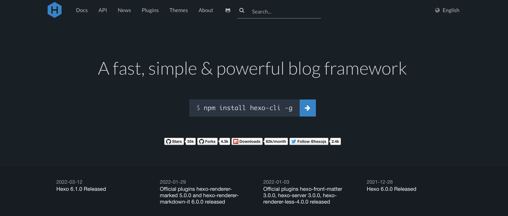

本人发个人博客是希望不受限于微博、知乎或者简书等平台的审核，希望我记录的一些文字能够保存在自己的硬盘里，避免因为某一天公共平台的关闭而消失在互联网中；并且我也希望能够定制自己的页面，设计一些delicate的前端功能，所以才想搭建 个人博客。
但是如果发博客因为使用html进行排版而浪费太多时间又适得其反，所以我选择了Hexo。
什么是 Hexo？
Hexo 是一个快速、简洁且高效的博客框架。Hexo 使用 Markdown（或其他渲染引擎）解析文章，在几秒内，即可利用靓丽的主题生成静态网页。
我能采用Markdown文件来进行文字图片的记录，而Hexo又能直接将Markdown文件自动转成页面代码，这样发博客的时间会大大压缩，并且也不会丢失自定义网站的自由度。
关于Hexo的安装和使用，首先，一切以Hexo官网为主；其次，最好是了解html/css/js/node.js等语言的用法，并辅助网上搜索来学习hexo的使用。
一、安装Hexo，配置Hexo文件夹
在mac上安装 Node/Npm
1 | brew update |
（windows/linux用户参见此官方教程）
安装 Hexo
1 | npm install hexo -g |
这时博客就在本地生成了。访问http://localhost:4000 可以看效果。可以说Hexo是很强大的，默认主题网站结构合理，适配手机。只需要优化（改一下失效的链接，添加评论，RSS等模块）就行了。
二、基本操作
hexo g生成/public 文件夹，里面是网站hexo d把这个网站文件夹推送到服务器hexo clean删除网站文件夹hexo s本地查看效果
三、配置文件
配置文件是两个，第一个是根目录的 _config.yml。重要配置有
- language: zh-CN 是中文，不写是英文
- url: （网站地址）
- root: / (根目录在哪里，github就写斜杠，有些服务器会多一层路径)
- skip_render: README.md 这样可以在 /source 里面放一个 README.md，推送的时候自动传到 Github 上面
- theme: landscape 这里可以换主题
推送设置 (GitHub)
1 | deploy: |
如果网站在服务器上，则可以用 rsync
1 | deploy: |
第二个配置文件，是主题的配置文件 themes/landscape/_config.yml，主要有导航栏(menu)，侧边栏(widgets)，网站图标(favicon)等。
四、写新文章
hexo new "article name"
这条命令会在source/_posts产生新文件，然后改改文件名，在进入编辑MarkDown就行了。
每篇文章最上面是配置区，能用到的主要是
- title: 题目
- date: 日期 （会影响在主页的顺序）
- tags: 标签
- categories: 分类
- updated: 修改日期
配置区下面就随便写了。值得一提的是，文章正文是支持html语言的，这样特殊字体和元素就可以直接加进去。
五、创建页面
1 | hexo new page about |
会在 source/about 里面产生新文件，跟文章是一样编辑的。然后再从主题配置的导航栏里面加上这一页。
1 | menu: |
六、引用图片
执行 npm install hexo-asset-image --save然后，主配置文件 _config.yml 设置为
1 | post_asset_folder: true |
这个时候创建新文章就会产生一个同名文件夹，把图片放入即可。同名文件夹和新文章.md在一个目录下，然后在文章正文这样引用放进去的图片。可以参考：hexo插入图片及控制大小
1 |  |
也可以在Markdown文件中使用html语句，设置图片的大小和对齐，例如：
1 | <!-- src为同名文件夹中的图片名 --> |
这种按照百分比显示方法，是以width方向为准，并保持纵横比的，换句话说，把设置width的部分去掉，height的值改为任意百分比，显示的图像都是原图大小（个人觉得这根博客窗口有关，毕竟现实截面的宽度相对是固定的，而高度/长度却是变化着的）。因此用此方法的时候，可以把height设置缺省。
七、引用视频文件
对某个链接中的视频文件，可以执行 npm install hexo-tag-dplayer这是一个播放器插件，使用时在文章中加入：
1 | { dplayer "url=" "pic=" "loop=yes" "theme=#FADFA3" "autoplay=false" "token=tokendemo" } |
其中 url 是视频地址，pic 是缩略图地址。
这个方法是引入视频的最佳方法，但是需要一个地方来存放这些文件（url）。Github只有1G太少了，可以考虑使用阿里云oss存储，淘宝账户就能开，还很便宜。
八、引入第三方视频
对视频网站上的视频，可在Markdown文件中明码使用html语言 iframe，比如
1 | <div class="selfadapting-video"> |
其中class="selfadapting-video" 是一个自适应长宽比例的容器
九、创建侧边栏
比如在 themes/landscape/layout/_widget/ 创建一个 about.ejs
1 | <% if (site.tags.length){ %> |
然后在主题配置的侧边栏中加上：
1 | widgets: |
十、RSS 订阅
执行 npm install hexo-generator-feed 下载rss功能包，然后在主配置文件 _config.yml 里面加上
1 | plugin: |
然后在主题配置文件里加上 rss: /atom.xml。
网上的教程都是这样的，但是当我实际加入的时候，发现rss软件里面的图片都是空的。后来我找到了这个Fork of hexo-generator-feed，用它来替换官方的包，然后去掉包里面 atom.xml 里面的 cdata就可以了。这个包还剩下一个bug是当程序框里的某一行code过长(出现左右拖动的功能后)，rss显示的code字体过大，但是不涉及编程的文章就没有问题了。
十一、站点地图
1. Google 版本
进入到根目录下，打开CMD，运行下面的命令：
npm install hexo-generator-sitemap --save
2. Baidu 版本
进入到根目录下，打开CMD，运行下面的命令：
npm install hexo-generator-baidu-sitemap --save
3. 生成站点地图
安装结束后，在_config.yml中找到url，改成你自己的域名。
1 | # URL |
更改完成后，每次进行打包的时候，会自动在public文件夹下生成sitemap.xml和baidusitemap.xml分别用于Google和百度。
4**. 查看**
将页面提交到服务器后，通过域名/sitemap.xml或者域名/baidusitemap.xml可以进行访问sitemap。
最后到Google或百度对应的站长工具进行提交sitemap就可以了。
十二、高级修改 (评论，分享)
Hexo的网页其实是被拆开成很多零件的，主要在themes/landscape/layout/_partial/
主题自带的功能也可以改，比如说分享功能可以在themes/landscape/source/js/script.js加一句
1 | <a href="http://service.weibo.com/share/share.php?&title=' + encodedUrl + '" class="article-share-sina" target="_blank" title="微博"></a> |
然后找到themes/landscape/source/css/_partial/article.styl 比照着定义一个 .article-share-sina 就可以了。
像这种高级修改，对有一定网页知识的人来说有无限可能，自己做一个主题都是可以的。
最后，最好是去学习一下HTML，CSS，JavaScript和Node.js/React.js，实现个人网站的自由定制！
参考：
[1] Hexo官网
[2] Github Pages(三)：使用Hexo博客生成工具；
[3] Huxpro.github.io指南；
[4] hexo插入图片及控制大小；